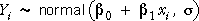

Modelling randomness in linear models
For stimulus-response data sets, the least squares line provides a useful descriptive summary of the way that the explanatory variable is related to the response. However most such data sets are random — if data collection was repeated, different response values would be recorded — and the resulting least squares estimates are therefore also random. To properly interpret the values of the parameter estimates, you must understand their variability.
For data with a single explanatory variable, the randomness is modelled by assuming an underlying population regression line (whose intercept, β0, and slope, β1, are usually unknown values). The response is modelled as a normal random variable whose mean is given by this population regression line.

This model is often expressed in the equivalent form,

Normal linear model with two explanatory variables
The simple normal linear model can be easily extended to model data with two explanatory variables,

An equivalent way to write the model is:

The random part of the model, εi, is again called the model's error term.
General linear model
Both the simple linear model (with one explanatory variable) and this linear model are special cases of the general linear model which can have any number of explanatory variables,
We will mostly concentrate on models with two explanatory variables in this chapter since they are easier to illustrate with 3-dimensional diagrams, but it should be noted that all the concepts and methods can be generalised to this wider class of models.
Illustration of the model
The diagram below shows a normal linear model that could possibly underlie the Body Fat data,

The diagram initially shows a scatterplot of the two explanatory variables. The model treats the values of Abdomen and Height as fixed (non-random) for the 25 individuals.
Click the y-x-z button to rotate the diagram. The grey plane is
For each individual a vertical red line has been drawn 2σ on each side of the regression plane. The grey planes outlined on each side of the regression plane are also 2σ above and below it.
Click on any such vertical line — the normal distribution of the response that is randomly generated by the model is displayed in blue.
Click Take sample a few times to randomly generate sets of response measurements from this model.
Since about 95% of normal values are within 2σ of their mean, about 95% of the generated crosses will be within the two outlined planes in the diagram.
Rotate the diagram to look end-on at the planes to verify that only about 5% of the crosses are outside the two outline planes.